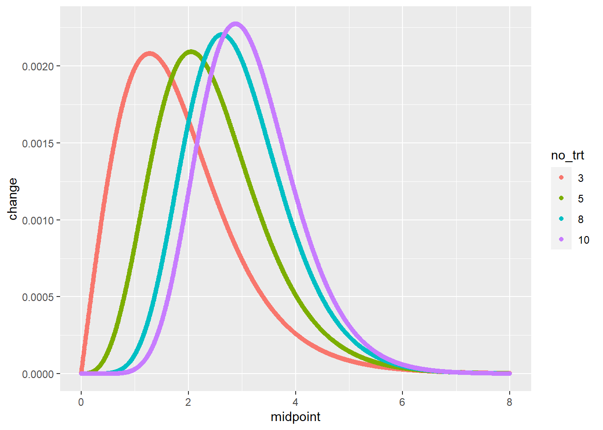
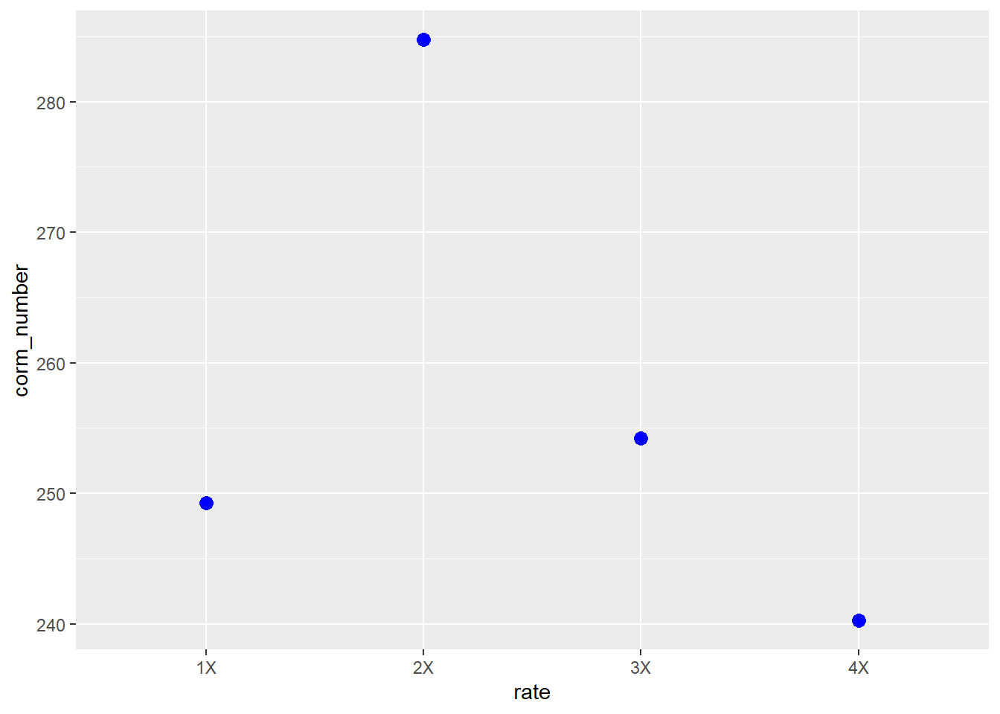
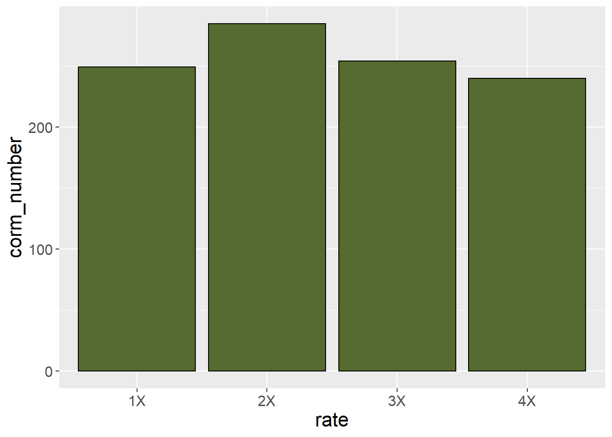
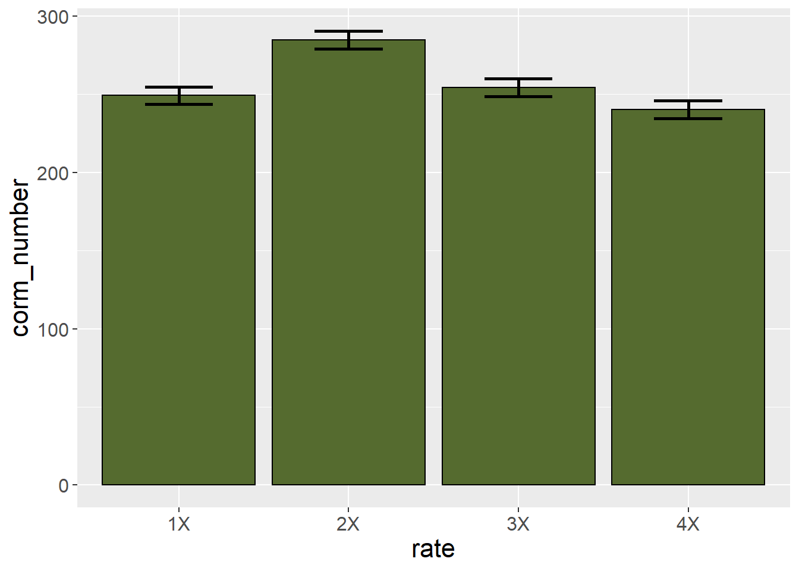
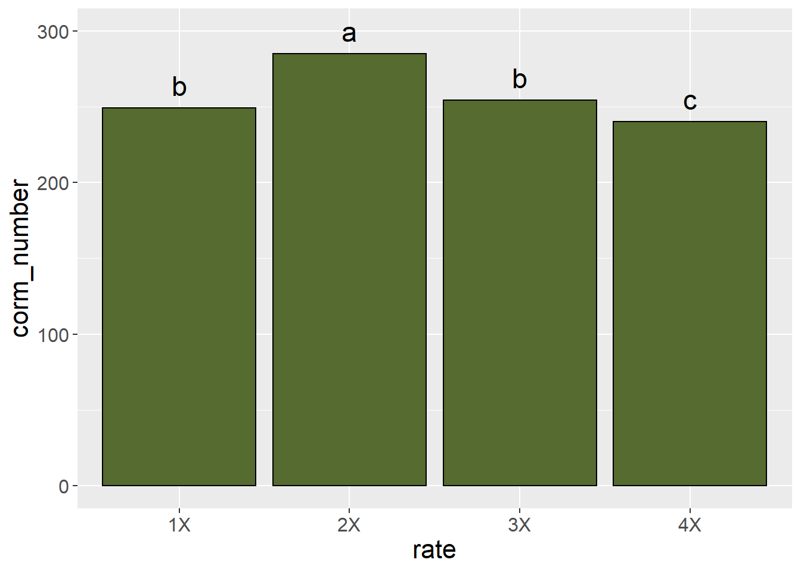

Chapter 8 Means Separation and Data Presentation
The previous two units focused on the design and analysis of effects in multiple treatment files. Our focus was to determine whether treat ent effects explained more of the variation among individuals in a population than error (or residual) effects, which are based on unexplained differences among individuals.
In the first half of this unit, we will learn three common tools used for testing the differences between treatments. This is often the key purpose of a research trial. We know going in that some treatments will be different. But we don’t how they will rank, and whether the difference between them will be great enough to infer one is better than another.
In the second half, we will learn how to present treatment means in tables and plots. Proper data allows the reader to not only grasp results, but even incorporate some of your findings into their own work
8.1 Case Study
Our sample dataset is inspired by Salas, M.C.; Montero, J.L.; Diaz, J.G.; Berti, F.; Quintero, M.F.; Guzmán, M.; Orsini, F. Defining Optimal Strength of the Nutrient Solution for Soilless Cultivation of Saffron in the Mediterranean. Agronomy 2020, 10, 1311.
Saffron is a spice made from the anthers of the saffron flow. It has a nuanced, sweet, complex flavor, and is used in dishes from Cornish saffron rolls to Spanish paella to Iranian tahdig. It comes from the anthers of the field-grown saffron flower and must be hand picked, making it very expensive.
In this study, saffron was grown hydroponically in 15-L pots filled with perlite, with four nutrient concentrations as defined by electroconductivity (EC): low (EC 2.0), medium (EC 2.5), high (EC 3.0), and very high (EC 4.0). The effect of the solutions on corm production (needed to propagate the crop) was measured.
library(tidyverse)
saffron = read.csv("data-unit-8/saffron.csv")
head(saffron)## plot block rate corm_number
## 1 1 1 1X 246
## 2 2 1 4X 240
## 3 3 1 3X 254
## 4 4 1 2X 285
## 5 5 2 4X 233
## 6 6 2 3X 2518.2 Least Significant Difference
Perhaps the most straightforward method of means separation is the infamous Least Significant Difference test. Not to be confused with the psychadelic parties in Marin County, California, the LSD test is as simple as this:
- calculate the least significant difference
- any treatment differences that are equal to or greater than the least significant difference are – you guessed it – significant
The least significant difference is calculated as follows:
\[LSD_{df, \alpha} = t_{df, \alpha} \cdot SED\]
Where \(LSD_{df, \alpha}\) is the least significant difference, given the degrees of freedom associated with the error effect and the desired signifance.
Does this formula look vaguely familiar? Does it remind you of what you were doing back in Unit 4? Great, because this is the same formula we used to calculate the distance between confidence limits and the sample mean back when we learned t-tests. Back then, we saw how the confidence interval was used to test the probability our observed difference between treatments was different from zero. Recall if zero fell outside our confidence interval, we inferred the two treatments were different. Similarly, if the difference between two treatments is greater than the least significant difference, we infer the treatments are significantly different.
In R, we use a function, LSD.test(), which is part of the agricolae package, to calculate the LSD. First, however, lets run an analysis of variance on our t data. The experiment was a randomized complete block design, so our linear additive model is:
\[ Y_{ij} = \mu +B_i + T_j + BT_{ij}\]
Where \(Y_{ij}\) is the number of corms, \(\mu\) is the overall population mean for the trial, \(B_i\) is the block effect, \(T_j\) is the treatment effect, and \(BT_{ij}\) is the block effect.
Our analysis of variance result is below. The effect of fertilization rate is highly significant. And this brings us to an important rule for using the LSD test. We only use the LSD test to separate means if the treatment effect is significant in our analysis of variance. Doing otherwise can lead to errors, as we will discuss below.
saffron$block = as.factor(saffron$block)
saffron_model = aov(corm_number ~ block + rate, saffron)
summary(saffron_model)## Df Sum Sq Mean Sq F value Pr(>F)
## block 3 85 28.4 2.465 0.129
## rate 3 4473 1490.9 129.333 1.02e-07 ***
## Residuals 9 104 11.5
## ---
## Signif. codes: 0 '***' 0.001 '**' 0.01 '*' 0.05 '.' 0.1 ' ' 18.3 LSD Output in R
Now that we know the effect of fertilization rate is highly significant, we want to know how the individual treatments rank, and whether they are significantly different from one another. The results of our LSD test are below.
library(agricolae)
lsd = LSD.test(saffron_model, "rate")
lsd## $statistics
## MSerror Df Mean CV t.value LSD
## 11.52778 9 257.125 1.32047 2.262157 5.43101
##
## $parameters
## test p.ajusted name.t ntr alpha
## Fisher-LSD none rate 4 0.05
##
## $means
## corm_number std r LCL UCL Min Max Q25 Q50 Q75
## 1X 249.25 4.272002 4 245.4097 253.0903 246 255 246.00 248.0 251.25
## 2X 284.75 2.629956 4 280.9097 288.5903 281 287 284.00 285.5 286.25
## 3X 254.25 2.872281 4 250.4097 258.0903 251 258 253.25 254.0 255.00
## 4X 240.25 5.439056 4 236.4097 244.0903 233 246 238.25 241.0 243.00
##
## $comparison
## NULL
##
## $groups
## corm_number groups
## 2X 284.75 a
## 3X 254.25 b
## 1X 249.25 b
## 4X 240.25 c
##
## attr(,"class")
## [1] "group"Lets unpack this piece by peace. The output from the LSD test is in a list of tables.
8.3.1 Statistics Table
Let’s start with the $statistics table. This explains how our LSD was calculated:
MSerror is the error or residual mean square. It should match that value from the ANOVA table above. Recall that MSerror is an estimate the variance within treatments – that is, the variation among plots unexplained by our model. Therefore, its square root is the standard deviation of the observations within each treatment.
DF is the degrees of freedom, which is used to calculate our t.value
Mean is just that – the overall mean of the trial.
CV is the coefficient of variance. By dividing the standard deviation by the mean, and multiplying by 100, we arrive at this value. Recall from Unit 6 that the CV is a measure of the quality control of the trial: how consistent were our experimental units?
The t-value is based on the degrees of freedom and \(\alpha\), the desired p-value (often 0.05) to be used to to test significance.
LSD is the product of the t-value and the standard error of the difference, which can be derived from MSerror and the number of replicates.
This is a lot to absorb, I realize. The most important two statistics for you to understand from this table are the CV and LSD. The other numbers are intermediate values, although if you list the LSD in a report you should also report the degrees of freedom used to calculate the t-value.
8.3.2 Means Table
The $means table explains the distribution of observations within a treatment level around their sample mean. Most of these concepts we discussed in Unit 4. The statistics are:
- corm_number: These are our sample means for each level of treatment
- std: the standard error of the sample mean. This is unique to the sample mean for each treatment.
- r: the number of replicates per treatment level
- LCL and UCL: the lower confidence limit and upper confidence limit for each mean. These are calculated just as we did in Unit 4.
The remainder of the statistics show the minimum and maximum values, and the quartiles.
8.3.3 Groups Table
Often, the $groups table is the most interesting, for it tests the differences among levels of a treatment. The treatment means among levels are ranked from greatest to least.
- corm_number: again, the sample mean for each level of treatment
- group: this groups treatments that are statistically equivalent. Any means followed by the same letter are considered equal. In the table above, the mean corm numbers associated with the 1X and 3X rates of fertilizer are considered equal. Any means not followed by the same letter are consisdered statistically different at the p-level chosen to test those differences. The 2X rate produced significantly greater corm numbers than the other fertilizer rates. The 4X rate produced statistically lesser corm numbers than the other fertilizer rates.
8.4 Comparisonwise versus Experimentwise Error
It is important LSD tests not be used indiscriminatly to separate means. The problem is that each time we test the difference between two means, we have a 5% chance of committing a type I error. This is the probability of committing a Type I error in that comparison. This is known as the comparisonwise error rate.
The probability of committing a type I error across all the comparisons is known as the experimentwise error rate. If we only conduct one comparison, our experimentwise error rate is equal to the comparisonwise error rate. But if we conduct two comparisons, our experimentwise error rate is equal to the probability that comparisonwise errors will not occur in both comparison.
We can demonstrate this with some simple calculations. Before we start our comparisons, there is a 100% chance we have not committed an experimentwise Type I error. We cold express this as:
\[ \text{Experimentwise Error} = 1 \]
If we once comparison, there is 5% probability of a comparisonwise Type I error – and a 95% chance the error will not occur. We can express this as
\[ \text{Experimentwise Error} = 1 - 0.95 = 0.05 \]
If we have two comparisons, there is a 95% probability a comparisonwise Type I error won’t occur in the first comparison – and a 95% probability it won’t occur in the second comparison. But the probability it doesn’t occur in both comparisons is 0.95 * 0.95:
\[ \text{Experimentwise Error} = 1 - 0.95 \times 0.95 = 1 - 0.9025 = 0.0975 \]
Now the Experimentwise error rate is 0.0975, or 9.75%.
What about three comparisons?
\[ \text{Experimentwise Error} = 1 - 0.95 \times 0.95 \times 0.95 = 1 - 0.8573 = 0.1427 \]
The Experimentwise error rate is now 0.1427, or 14.27%.
Finally, what if we had 10 comparisons?
\[ \text{Experimentwise Error} = 1 - 0.95^{10} = 1 - 0.5987 = 0.4013\] Our experimentwise error rate is now about 0.40, or 40%.
As the number of our comparisons increases, so does the probability of an experimentwise error. How can we avoid this? The first method, mentioned above, is to not use the LSD test unless the ANOVA shows a significant treatment effect. We call this approach the F-protected LSD test.
The second approach is to use a multiple range test that increases its minimum significant difference for comparing treatments as the number of treatments increases.
8.5 Tukey’s Honest Significant Difference
If we are going to be comparing many treatments, it is better to use a minimum significant difference, like Tukey’s Honest Significant Different (HSD) Test. Tukey’s HSD is calculated very similarly to the least significant difference:
\[ \text{Tukey's HSD} = Q_{\alpha, df, k} \text{ } \cdot SED \]
The difference in Tukey’s HSD is that we use Q, the “studentized range distribution” (you can just call it Q in this course) in place of the t-distribution. Q differs from t in that its value is determined not only by \(\alpha\), the desired probability of a Type I error, and \(df\), the degrees of freedom associated with the error mean square, but also \(k\), the number of treatments.
The plot below includes four “Q” distribution curves, associated with 3, 5, 6, and 10 treatments. Observe how the distributions shift to the right as the number of treatments increases. This means that the minimum difference for significance also increases with the number of treatments.
tukey_list = list()
for(k in c(3:10)){
x_ptukey <- seq(0, 8, by = 0.005) # Specify x-values for ptukey function
y_ptukey <- ptukey(x_ptukey, nmeans = k, df = 3*k) # Apply ptukey function
tukey_df = data.frame(x_ptukey) %>%
cbind(y_ptukey) %>%
mutate(change = y_ptukey - lag(y_ptukey)) %>%
mutate(midpoint = (x_ptukey + lag(x_ptukey))/2) %>%
mutate(no_trt = k) %>%
as.data.frame()
i=k-2
tukey_list[[i]] = tukey_df
}
tukey_df_all = bind_rows(tukey_list)
tukey_df_all %>%
filter(no_trt %in% c(3,5,8,10)) %>%
mutate(no_trt = as.factor(no_trt)) %>%
ggplot(aes(x=midpoint, y=change, group=no_trt)) +
geom_point(aes(color=no_trt))## Warning: Removed 4 rows containing missing values (geom_point).
The Tukey test output below is very similar to the LSD test output. The “$statistics” section is identical to that of the LSD output, except it now reports the minimum significant difference instead of the least significant difference. In the “$parameters” section, the “Studentized Range” value (Q) is given in place of the t-value. The “$groups” section can be interpreted the same for the minimum significant difference as for the least significant difference.
tukey = HSD.test(saffron_model, "rate", group=TRUE)
tukey## $statistics
## MSerror Df Mean CV MSD
## 11.52778 9 257.125 1.32047 7.494846
##
## $parameters
## test name.t ntr StudentizedRange alpha
## Tukey rate 4 4.41489 0.05
##
## $means
## corm_number std r Min Max Q25 Q50 Q75
## 1X 249.25 4.272002 4 246 255 246.00 248.0 251.25
## 2X 284.75 2.629956 4 281 287 284.00 285.5 286.25
## 3X 254.25 2.872281 4 251 258 253.25 254.0 255.00
## 4X 240.25 5.439056 4 233 246 238.25 241.0 243.00
##
## $comparison
## NULL
##
## $groups
## corm_number groups
## 2X 284.75 a
## 3X 254.25 b
## 1X 249.25 b
## 4X 240.25 c
##
## attr(,"class")
## [1] "group"Unlike the LSD test, the Tukey test does not need to be “protected” by first examing whether the Analysis of Variance treatment effect is significant. That said, the Tukey test is unlikely to indicate a significant difference between treatments without the ANOVA treatment effect being significant as well.
8.6 Linear Contrast
The last type of means comparison we will learn in this lesson is the linear contrast. Unlike the LSD and Tukey tests, linear contrasts may be used to separate two groups of treatments. While a lot of math may be introduced to the curious, in a linear contrast the statistician defines two groups of treatments through the use of coefficients; R then calculates their means and standard errors, and compares them using a t-test. There are multiple ways we can use a linear contrast, and our saffron dataset is a great way to introduce them.
8.6.1 Coefficients
Recall how a t-test between two treatments works. We calculate \(t\) as:
\[ t = \frac{(\bar{x}_1-\bar{x}_2) - (\mu_1-\mu_2)}{SED}\] Where \(\bar{x}_1 -\bar{x}_2\) is the difference between sample means, \((\mu_1-\mu_2)\) is the hypothesized difference between treatments (usually zero), and SED is the standard error of the difference.
For most situations, we could simplify the above equation to:
\[ t = \frac{\bar{x}_1-\bar{x}_2}{SED}\]
What about if we are comparing more than two treatments? For our saffron example, what if we wanted to calculate the difference between the mean of the two lower rates (1X and 2X) and the mean of the two higher rates (3X and 4X)? Lets call this difference \(L\). We would calculate this difference as:
\[ L = \frac{\bar{x}_{1X} + \bar{x}_{2X}}{2} - \frac{\bar{x}_{3X} + \bar{x}_{4X}}{2} \]
All we are doing above is 1) calculating the means for the two groups and 2) subtracting the mean of the 3X and 4X rates from the mean of the 1X and 2X rates. Now let’s express this same formula a little differently. What we are doing in the above equation is multiplying each number by \(1/2\):
\[ L = \frac{1}{2}(\bar{x}_{1X} + \bar{x}_{2X}) - \frac{1}{2}(\bar{x}_{3X} + \bar{x}_{4X})\]
In addition (bear with me!), when we subtract the mean of treatments 3X and 4X, it is the equivalent of adding the negative value of their mean to the mean of treatments 1X and 2X:
\[ L = \frac{1}{2}(\bar{x}_{1X} + \bar{x}_{2X}) + (- \frac{1}{2}(\bar{x}_{3X} + \bar{x}_{4X}))\]
Finally, we can arrange the equation above as:
\[ L = \frac{1}{2}\bar{x}_{1X} + \frac{1}{2}\bar{x}_{2X} - \frac{1}{2}\bar{x}_{3X} - \frac{1}{2}\bar{x}_{4X} + \]
The reason for this tortuous algebra flashback is to show you where the contrast coefficients come from. Each of the \(\frac{1}{2}\)s in the equation above is a contrast coefficient.
Let’s demonstrate this with our saffron data. Our saffron treatment means are:
saffron_means = saffron %>%
group_by(rate) %>%
summarise(corm_number = mean(corm_number)) %>%
ungroup()
saffron_means## # A tibble: 4 x 2
## rate corm_number
## <chr> <dbl>
## 1 1X 249.
## 2 2X 285.
## 3 3X 254.
## 4 4X 240.Now let’s add in a column with our coefficients:
saffron_coefficients = saffron_means %>%
mutate(coefficient = c(1/2, 1/2, -1/2, -1/2))
saffron_coefficients## # A tibble: 4 x 3
## rate corm_number coefficient
## <chr> <dbl> <dbl>
## 1 1X 249. 0.5
## 2 2X 285. 0.5
## 3 3X 254. -0.5
## 4 4X 240. -0.5We see that R has converted these to decimals. We then create a new column, “mean_x_coefficient”, that is the product of the original mean and the coefficient. We see these products are approximately half the value of the original sample mean (some may be less than half because of rounding errors).
saffron_products = saffron_coefficients %>%
mutate(mean_x_coefficient = corm_number * coefficient)
saffron_products## # A tibble: 4 x 4
## rate corm_number coefficient mean_x_coefficient
## <chr> <dbl> <dbl> <dbl>
## 1 1X 249. 0.5 125.
## 2 2X 285. 0.5 142.
## 3 3X 254. -0.5 -127.
## 4 4X 240. -0.5 -120.Finally, we can sum the mean_x_coefficient column to get the total difference among treatments.
total_difference = sum(saffron_products$mean_x_coefficient)
paste("total difference = ", total_difference, sep="")## [1] "total difference = 19.75"One critical rule about requirements is their sum must always equal zero. Otherwise you are not completely identifying two groups to compare. Using coefficients that do not sum to zero can also suggest you are weighting one group unfairly compared to another.
###Contrast Calculations
To calculate \(t\), of course, we must divide \(L\) by the standard error of the difference:
\[ t = \frac{L}{SED}\]
So how is the standard error of the difference calculated?
Well, we know that the error mean square from our ANOVA is equal to the mean variance within treatments. And we know that if we take the square root of a variance, we get the standard deviation. And if we divide the standard deviation by the number of observations in each sample mean, we get the standard error.
In a paired t-test, where we are simply calculating a standard error for one set of numbers, the differences between each pair, the standard error of the difference is calculated the same as the standard error:
\[ SED = SE = \frac{s}{\sqrt{n}} \]
Where \(s\) is the standard deviation and \(n\) is the number of observations (reps) per treatment. This formula is equal to that below, where we use the variance, \(s^2\), in place of the standard deviation.
\[ SED = \sqrt{\frac{s^2}{n}} \]
When we work with two-treatment trials where the treatments are not paired or blocked, we account for the variance and number replicates individually. For treatment levels “1” and 2”, the standard errror of the difference becomes \[ SED = \sqrt{\frac{s_1^2}{n_1} + \frac{s_2^2}{n_2}} \]
In most trials, however, we assume that the variances and number of replications are equal among treatments. So we can also express the above trial as:
\[ SED = \sqrt\frac{2 \cdot s^2}{n}\]
Recall that in the analsis of variance for a multiple treatment trial, the error mean squares is the mean variance within treatments. So the equation above is equivalent to:
\[ SED = \sqrt\frac{2\cdot EMS}{n}\]
In a linear contrast, however, our standard error of the difference must be scaled according to the coefficients we use, since we are no longer comparing two treatments, but multiple. So our equation becomes:
\[ SED = c \cdot \sqrt{\frac{EMS}{n}} \]
Where \(c\) is the square root of the sum of the squared constants is the For our example above, this sum, \(c\), would be:
\[ c = s\sqrt{\sum (\frac{1}{2})^2 + (\frac{1}{2})^2 + (- \frac{1}{2})^2 + (- \frac{1}{2})^2} \]
Which is equal to:
\[ c = \sqrt{\frac{1}{4} + \frac{1}{4} +\frac{1}{4} +\frac{1}{4}} = \sqrt{1} = 1\]
We can now calculate the standard error of the difference for our contrast. First, lets go back to our analysis of variance.
saffron_model = aov(corm_number ~ rate, saffron)
summary(saffron_model)## Df Sum Sq Mean Sq F value Pr(>F)
## rate 3 4473 1490.9 94.66 1.28e-08 ***
## Residuals 12 189 15.7
## ---
## Signif. codes: 0 '***' 0.001 '**' 0.01 '*' 0.05 '.' 0.1 ' ' 1We can see from the ANOVA output thtat our error mean square is 15.75. We know from the design itself that we had 4 replicates
So our final standard error of the difference for our contrast is:
\[ SED = 1 \cdot \sqrt{\frac{15.75}{4}} = 1 \cdot \sqrt{3.9375} = 1.984 \]
The t-value for our test, would then be:
\[ t = \frac{L}{SED} = \frac{19.75}{1.984} = 9.954 \]
The probability of a t-value of 10, given the 12 degrees of freedom associated with the error sum of squares, would be:
pt(9.954,12, lower.tail = FALSE)## [1] 1.882084e-078.6.2 Linear Contrasts with R
We can automate linear contrast testing, of course, using R and the glht() function of the multcomp package. First, we need to define a matrix (table) of contrast coefficients for R. To get the coefficients in the correct order, lets double check the order in which the rate levels are listed in R. It is important to make sure our treatment is classified as a factor. We can do this using the as.factor() function
saffron$rate = as.factor(saffron$rate)We can then list the order of the levels in treatment rate:
levels(saffron$rate)## [1] "1X" "2X" "3X" "4X"We can see they follow the order 1X, 2X, 3X, 4X. We will therefore form a matrix, K, with the appropriate coefficients.
K = matrix(c(1/2, 1/2, -1/2, -1/2),1)
K## [,1] [,2] [,3] [,4]
## [1,] 0.5 0.5 -0.5 -0.5We are now ready to run our contrast. First, we need to slightly alter our ANOVA model by adding a zero (0) between the tilde (~) and the treatment name. This is one of of those one-off ideosyncrasities of R.
library(multcomp)## Warning: package 'multcomp' was built under R version 4.0.5## Loading required package: mvtnorm## Warning: package 'mvtnorm' was built under R version 4.0.5## Loading required package: survival## Warning: package 'survival' was built under R version 4.0.5## Loading required package: TH.data## Loading required package: MASS## Warning: package 'MASS' was built under R version 4.0.5##
## Attaching package: 'MASS'## The following object is masked from 'package:plotly':
##
## select## The following object is masked from 'package:dplyr':
##
## select##
## Attaching package: 'TH.data'## The following object is masked from 'package:MASS':
##
## geysersaffron_model_for_contrast = aov(corm_number ~ 0 + rate, saffron)
low_vs_high = glht(saffron_model_for_contrast, linfct=K)
summary(low_vs_high)##
## Simultaneous Tests for General Linear Hypotheses
##
## Fit: aov(formula = corm_number ~ 0 + rate, data = saffron)
##
## Linear Hypotheses:
## Estimate Std. Error t value Pr(>|t|)
## 1 == 0 19.750 1.984 9.953 3.77e-07 ***
## ---
## Signif. codes: 0 '***' 0.001 '**' 0.01 '*' 0.05 '.' 0.1 ' ' 1
## (Adjusted p values reported -- single-step method)And there we have it, our contrast in seconds. Now let’s interpret this. Estimate is the difference between groups. Since we subtracted the mean of the 3x and 4X rates from the mean of the 1X and 2X rates, the positive estimate value indicates the lower rates produced greater corm numbers than the higher rates.
“Std. Error” is the standard error of the difference, as we calculated above. The t-value is equal to the estimate divided by the standard error of the difference. Finally, “Pr(>|t|)” is the probability of observing the t-value by chance. In this case, it is \(3.77 \times 10^{-7}\), very close to zero. We conclude the lower two rates, as a group, produce greater corms than the upper two rates as a group.
We can quickly as other questions of our data. For example, do the middle two rates (2X and 3X) produce a greater corm number than the lowest (1X and highest (4X) rates? Again, let’s examine the order of our rate levels.
levels(saffron$rate)## [1] "1X" "2X" "3X" "4X"In order to subtract the mean corm number of rates 1X and 4X from the mean corm number of rates 2X and 3X, we will need to calculate the difference as:
\[ L = (-\frac{1}{2})\bar{x}_{1X} + (\frac{1}{2})\bar{x}_{2X} + (\frac{1}{2})\bar{x}_{3X} + (- \frac{1}{2})\bar{x}_{4X} + \]
So our contrasts coefficients would be \(-\frac{1}{2}\), \(\frac{1}{2}\), \(\frac{1}{2}\), \(-\frac{1}{2}\). Our contrast maxtrix is then:
K = matrix(c(-1/2, 1/2, 1/2, -1/2),1)
K## [,1] [,2] [,3] [,4]
## [1,] -0.5 0.5 0.5 -0.5We are now ready to run our contrast. First, we need to slightly alter our ANOVA model by adding a zero (0) between the tilde (~) and the treatment name. This is one of of those one-off ideosyncrasities of R.
library(multcomp)
saffron_model_for_contrast = aov(corm_number ~ 0 + rate, saffron)
low_high_vs_middle = glht(saffron_model_for_contrast, linfct=K)
summary(low_high_vs_middle)##
## Simultaneous Tests for General Linear Hypotheses
##
## Fit: aov(formula = corm_number ~ 0 + rate, data = saffron)
##
## Linear Hypotheses:
## Estimate Std. Error t value Pr(>|t|)
## 1 == 0 24.750 1.984 12.47 3.14e-08 ***
## ---
## Signif. codes: 0 '***' 0.001 '**' 0.01 '*' 0.05 '.' 0.1 ' ' 1
## (Adjusted p values reported -- single-step method)We see this estimated difference is even greater than the previous contrast. The significant t-value suggests there may be a parabolic (curved) response of corm number to nutrient solution rate. Indeed, if we plot the mean, we can see a parabolic response
saffron_means %>%
ggplot(aes(x=rate, y=corm_number)) +
geom_point(size = 3, color="blue")
8.7 Means Presentation
Something I have always overlooked in teaching this course is also something that is most basic: once we have separated our means, how do we present them to others? There are two ways to present means: in a table, or in a plot. Both have advantages and disadvantages. In a table, you provide raw statistics (treatment means, standard errors, and perhaps, means groupings from an LSD or Tukey test). A reader can use these values to recalculate your statistics, say, if they wanted to separate the means at p=0.10, p=0.1, or p=0.001.
A figure, one the otherhand, allows the reader to quickly grasp treatment differences, or patterns among treatments. In addition, they are colorful and – lets face it – more inviting than a dense table of numbers.
Whichever format we use, however, we need to present our treatment means and some reference for the reader to gauge whether those means are statistically equal or different.
8.7.1 Means Tables
Tables can be tricky, especially when many types of measures are included. If we are reporting results from a factorial experiment, we may be tempted to list the levels of one factor down rows, and the other factor across columns. I would generally discourage this, however, unless required to fit the table neatly into a publication space. Generally, the long form of means presentation is best.
In the long form of data, cases (individual observations or treatment means) are listed down the rows. Measurements from each cases are listed across rows.
For our saffron data, our table would start like this:
final_table = saffron_means
knitr::kable(final_table)| rate | corm_number |
|---|---|
| 1X | 249.25 |
| 2X | 284.75 |
| 3X | 254.25 |
| 4X | 240.25 |
To this table, we may wish to add the standard error of the difference. Remember, the standard error of the difference for an LSD or Tukey test is equal to:
\[ SED = \sqrt{\frac{(2 \cdot EMS)}{n}} \]
So for our saffron trial, where the error mean square is 15.75 (we can get this from either the ANOVA table or the LSD output)and the number of replications is 4, the standard error of the difference is:
\[ SED = \sqrt{\frac{(2 \cdot 15.75)}{4}} = \sqrt{7.875} = 2.80 \]
We can add this below the means
final_table = saffron_means %>%
mutate(rate = as.character(rate)) %>%
rbind(c("SED", 2.80))
knitr::kable(final_table)| rate | corm_number |
|---|---|
| 1X | 249.25 |
| 2X | 284.75 |
| 3X | 254.25 |
| 4X | 240.25 |
| SED | 2.8 |
It is also important to indicate the number of replications of the treatments. We can add another row to the table with N.
final_table = saffron_means %>%
mutate(rate = as.character(rate)) %>%
rbind(c("SED", 2.80)) %>%
rbind(c("N", 4))
knitr::kable(final_table)| rate | corm_number |
|---|---|
| 1X | 249.25 |
| 2X | 284.75 |
| 3X | 254.25 |
| 4X | 240.25 |
| SED | 2.8 |
| N | 4 |
We should add the LSD, to make it easy for readers to compare treatments. We will want also, to include the \(\alpha\) which was used to calcualate the LSD. That way, the reader will know whether the risk of a Type I error – that the LSD will separate treatments that are not truely different – is 5% or some other probability.
final_table = saffron_means %>%
mutate(rate = as.character(rate)) %>%
rbind(c("SED", 2.80)) %>%
rbind(c("N", 4)) %>%
rbind(c("LSD (0.05)", 6.11))
knitr::kable(final_table)| rate | corm_number |
|---|---|
| 1X | 249.25 |
| 2X | 284.75 |
| 3X | 254.25 |
| 4X | 240.25 |
| SED | 2.8 |
| N | 4 |
| LSD (0.05) | 6.11 |
We might want to include the p-value from the ANOVA table, so the reader knows that the LSD is protected. The p-value for the saffron trial is \(1.28 \times 10^{-8}\). This is an extremely small number. It is acceptable for us to simplify this in the table, indicating that the probability of F was less than 0.001.
final_table = saffron_means %>%
mutate(rate = as.character(rate)) %>%
rbind(c("SED", 2.80)) %>%
rbind(c("N", 4)) %>%
rbind(c("LSD (0.05)", 6.11)) %>%
rbind(c("Pr<F", "<0.001"))
knitr::kable(final_table)| rate | corm_number |
|---|---|
| 1X | 249.25 |
| 2X | 284.75 |
| 3X | 254.25 |
| 4X | 240.25 |
| SED | 2.8 |
| N | 4 |
| LSD (0.05) | 6.11 |
| Pr<F | <0.001 |
Finally, if imperial (pounds, acres, etc) or metric units were used to measure the response variable, it is important to indicate that in the table. Indicating those in parentheses after the variable name is appropriate.
8.7.2 Plotting Means
When we work with categorical treatments (that is, treatments levels that are defined by words), or even numerical variables treated as categorical variables (as in the saffron example) we should use a bar plot, not a line plot, to visualize the data. An easy way to determine whether a bar plot should be used is this: if you are using an LSD or Tukey’s test to separate your means, you should use a bar plot. A line plot, which suggests treatment levels are numerically related to (higher or lower than) each other should be used to fit regression models, where the analysis defines a continuous relationship between Y and X.
A basic bar plot will has a bar representing each treatment mean. The treatment level is indicated along the x (horizontal) axis. The sample mean is indicated along the y (vertical) axis. The bar height indicates the sample mean.
saffron_means %>%
ggplot(aes(x=rate, y=corm_number)) +
geom_bar(stat="identity", color="black", fill = "darkolivegreen") +
theme(axis.text = element_text(size=12),
axis.title = element_text(size=16))
This plot, however, does not provide the viewer any sense of whether corm number is significantly different among treatments. For that purpose, we can add error bars.
saffron_means %>%
ggplot(aes(x=rate, y=corm_number)) +
geom_bar(stat="identity", color="black", fill = "darkolivegreen") +
geom_errorbar(aes(ymin=corm_number-1.81, ymax=corm_number+1.81), width=0.4, size=1) +
theme(axis.text = element_text(size=12),
axis.title = element_text(size=16))These error bars stretch from one standard error of the mean below the sample mean to one standard error of the mean above the sample mean. As a general rule of thumb, the least significant difference is approximately 2 standard errors of the mean. If the error bars from two treatment levels don’t overlap, then the two treatments are likely different. We can see in the plot that the corm number for the 1X and 3X fertilizer rates are very similar.
Alternatively, we could set the error bar height equal to the least significant difference itself.
saffron_means %>%
ggplot(aes(x=rate, y=corm_number)) +
geom_bar(stat="identity", color="black", fill = "darkolivegreen") +
geom_errorbar(aes(ymin=corm_number-5.63, ymax=corm_number+5.63), width=0.4, size=1) +
theme(axis.text = element_text(size=12),
axis.title = element_text(size=16))
This allows the viewer to use the actual LSD to separate treatment means. If the range of the error bar from one treatment does not include the mean of another treatment, then the two treatments are not equal.
Significant differences among treatments can also be indicated by including letter groupings from an LSD or Tukey’s test.
lsd$groups %>%
rownames_to_column(var="rate") %>%
ggplot(aes(x=rate, y=corm_number)) +
geom_bar(stat="identity", color="black", fill = "darkolivegreen") +
geom_text(aes(x=rate, y=corm_number+15, label=groups), size=6) +
theme(axis.text = element_text(size=12),
axis.title = element_text(size=16))
We will learn more about graphics in the exercises this unit. A very comprehensive resource for creating plots in R is R Graphics Cookbook, by Winston Chang. An online copy is available at https://r-graphics.org/. Print copies can also be purchased from common booksellers. This book explains not only how to create plots, but how to adjust labels, legends, axis lables, and so on.